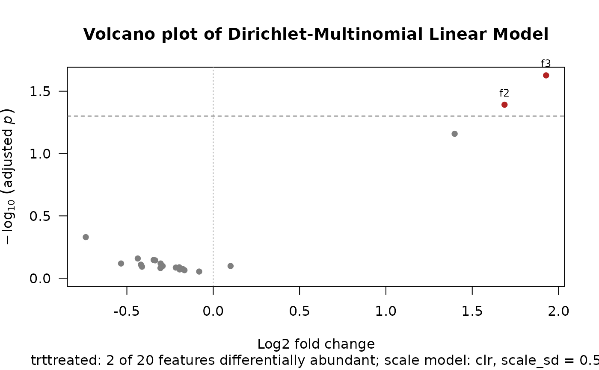
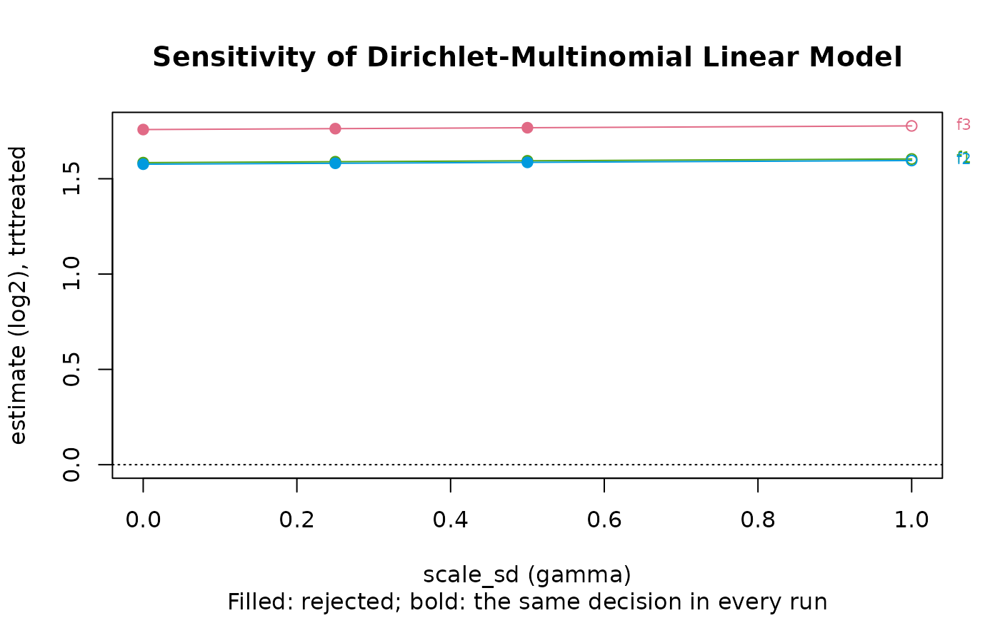

Fits a linear model to every feature's log abundance, carrying the
uncertainty of low counts and zeros (Dirichlet posterior draws) and of
the samples' unmeasured total loads (a scale model) through to the
estimates and p-values: the linear models of ALDEx3 (McGovern &
Silverman 2026; Nixon et al. 2025). It is the regression form of
dirmult_ttest(): any design, with covariates, numeric variables and an
optional random intercept, and a scale model that can use measured loads.
Arguments
- counts
A numeric matrix of non-negative abundances (samples \(\times\) features), or any of the objects listed under Input Types. Raw counts are recommended: the Dirichlet posterior's spread depends on the counts' size, so proportions or rescaled values give wrong uncertainties.
- formula
The model, a one-sided formula over the columns of
data, such as~ status + age, or the same as a string. Anythingstats::model.matrix()accepts may be used. Every factor (and character or logical column) is coded with treatment contrasts, its first level (in sorted order, or a factor's own order) the reference. One random intercept may be added, as in lme4:~ status + age + (1 | subject)(see Repeated measures).NULL(the default) is~ groups.- data
A data frame of sample metadata, with the variables of
groupsorformula. Its rows are matched to the samples ofcountsby name when both have names, else by position.- groups
The term of interest: with
formula, the name of one of its terms (the oneplot()shows by default); alone, the name of a column ofdataor a vector with one value per sample, and the model is~ groups.- margin
The margin containing samples.
1if samples are rows,2if samples are columns. Ignored whencountsis a special object class (e.g.phyloseq). Default:1- pseudocount
The Dirichlet prior: a positive number added to every value, zero or not, before drawing. Default:
0.5, as ALDEx3 anddirmult_ttest().- scale_model
What is assumed about the samples' total loads, without measurements:
'clr'(the default; ALDEx3'sclr.sm()) centres them where the clr puts them, so that the typical feature doesn't change;'tss'(tss.sm()) assumes no systematic difference in total load, so that relative abundances (proportions) are compared. Either wayscale_sdsays how uncertain that is. See Scale models.- scale_sd
The uncertainty of the scale model: the standard deviation, in log2 units, of a random shift in log2 load drawn for each design column in each draw (ALDEx3's
gamma). Default:0.5, as ALDEx3'sclr.sm().0takes the assumption as exact.- load
Measured (or predicted) total loads, one per sample (flow cytometry, qPCR, spike-ins, or the load predicted from the profile as in Nishijima et al. 2025): numbers greater than 0, in any unit, matched to the samples by name when both are named; or the name of a column of
data. Replacesscale_modelandscale_sd(ALDEx3'ssample.sm()). Default:NULL(none).- load_sd
With
load: the standard deviation of each sample's log2 load's error, one number for all samples or one per sample (or a column ofdata);0takes the loads as exact. Required withload.- n_draws
The number of Monte Carlo draws from the Dirichlet posterior and the scale model (ALDEx3's
nsample). Default:1000, the least ALDEx3 recommends with a scale model (its default is 2,000).- se_type
The standard errors of each draw's coefficients:
'hc3'(the default, as ALDEx3) or'hc0', heteroskedasticity- consistent ones (Long & Ervin 2000), or'classical'(ordinary least squares). With a random intercept the standard errors are the mixed model's, and only'classical'may be given.- alpha
The significance level for
reject, applied top_adjusted. Strictly between 0 and 1. Default:0.05.- p_adjust
How to adjust each draw's p-values for testing every feature, separately for each covariate: any method of
stats::p.adjust()('holm', the default, as ecodive's other DA methods;'BH', as ALDEx3;'hochberg','hommel','bonferroni','BY','fdr','none').- seed
An integer seed for the random draws. The same
seedgives the same results, for any number ofcpus.- cpus
How many parallel processing threads should be used. The default,
n_cpus(), is the CPU cores this R process may use, within any limits set on it. Results are the same for anycpus.
Value
A data frame of class c('ecodive_dirmult_lm', 'data.frame')
with a row per feature and design column (the intercept included), in
the order of counts:
feature: the feature's name, or its index as text.covariate: the design column, asstats::model.matrix()names it ("(Intercept)","statusmoderate","age", ...).estimate: the coefficient, in log2 units (a log2 fold change for a factor's level against its reference, per unit for a numeric variable), averaged over the draws.se: its standard error, averaged over the draws.dof: the degrees of freedom of each draw's t-tests: \(n - P\) (samples less design columns); with a random intercept, Satterthwaite's, averaged over the draws.p_value: the two-sided p-value, from the draws' one-sided ones (see Details).p_adjusted: the same from the draws' adjusted p-values.reject:TRUEwhenp_adjusted <= alpha.
Attributes: method ("dirmult_lm"), formula, groups, design
(the model matrix), random (the random intercept's variable, if
any), scale_model ("clr", "tss" or "load"), scale_sd (NA
with load), load_sd (per sample, with load), se_type,
n_draws, pseudocount, alpha, p_adjust, seed, log_base (2),
and per feature mean (its mean clr value over the samples, log2,
averaged over the draws: the x axis of an MA plot) and resid_sd (its
residual standard deviation, log2, averaged over the draws; for a
model of one two-level factor, the pooled within-group standard
deviation).
Details
With \(x_{sf}\) the abundance of feature \(f\) in sample \(s\),
each of the n_draws draws:
Draws each sample's composition from its Dirichlet posterior, \(G_{sf} \sim \mathrm{Gamma}(x_{sf} +\)
pseudocount\(, 1)\), and takes \(\log_2\) of the proportions \(G_{sf} / \sum_g G_{sg}\).Draws each sample's log2 scale (total load) from the scale model, and adds it: \(Y_{sf} = \log_2 \mathrm{composition}_{sf} + \log_2 \mathrm{scale}_s\), an estimate of the feature's log2 absolute abundance.
Fits the linear model \(Y_{\cdot f} = X\beta_f + e\) to every feature by least squares (or, with a random intercept, by REML), with the
se_typestandard errors and t statistics.
estimate and se average the draws' coefficients and standard errors.
The p-values follow ALDEx3's aldex.pvals(), which allows for draws in
which a coefficient changes sign (Nixon et al. 2025): each draw's
one-sided p-values for a negative and for a positive coefficient,
doubled and capped at 1, are averaged over the draws separately, and
p_value is the smaller average. For p_adjusted, each draw's doubled
one-sided p-values are first adjusted across the features (with
p_adjust, separately for each design column), then averaged and the
smaller taken. So p_adjusted is an average of adjusted p-values, as in
ALDEx2 and ALDEx3, where dirmult_ttest() adjusts its averaged
p-values, as scikit-bio does. A feature is rejected when p_adjusted <= alpha; there is no interval criterion (unlike dirmult_ttest()), so
decisions settle as n_draws grows.
Scale models. Sequencing gives each sample's composition, not its total load (its scale), and a log fold change of absolute abundance is a fold change of composition plus a fold change of load. Every compositional method assumes something about the second term; a scale model says what, and how sure that is (Nixon et al. 2025):
| Information available | Scale model |
| The clr's centre (the geometric mean of the features) is plausible: most features don't change | scale_model = 'clr' (default), scale_sd = 0.5 |
| Total load plausibly doesn't differ systematically between groups | scale_model = 'tss', scale_sd = 0.5 |
| Measured or predicted total load per sample (flow cytometry, qPCR, spike-ins, a load predictor) | load, with load_sd its error (log2) |
| Certainty in either assumption (a normalization, as in most methods) | scale_sd = 0 |
With 'clr', each sample's log2 scale is minus its mean log2
proportion (the clr), plus \(x_s^\top\Lambda\); with 'tss', it is
\(x_s^\top\Lambda\) alone; in both, \(\Lambda \sim N(0,\)
scale_sd\(^2 I)\) is drawn afresh in each draw, one value per design
column, so that samples with the same design share a shift and every
coefficient gets its own uncertainty, added to its estimate's spread over
the draws. With load, each sample's log2 scale is \(N(\log_2\)
load\(_s,\) load_sd\(_s^2)\), independently per sample. A larger
scale_sd (or load_sd) widens the averaged p-values, so only changes
clear of plausible changes in load are rejected; it controls false
discoveries when the assumed scale is wrong, at a cost in power (Nixon et
al. 2025; Dos Santos et al. 2026). Check how the results depend on it:
da_sensitivity() with scale_sds = TRUE reruns the model at
scale_sd = 0, 0.25, 0.5 and 1. With a scale model, use many
draws: the p-values average over the rare large shifts.
Units. Every estimate is in log2 units of absolute abundance, as the
scale model defines it (the log_base attribute). With 'clr' and
scale_sd = 0 the coefficients are those of a regression of each
feature's clr values (log2); the intercept is then a feature's mean clr
value in the reference samples. With load, they are log2 changes of
absolute abundance; the unit of load shifts only the intercept.
Relation to dirmult_ttest(). For the same seed the two functions
draw the same Gamma variables for a sample (one random stream per draw
and sample of the table), so with scale_model = 'clr', scale_sd = 0
and ~ group for two groups, estimate for the group's column is
dirmult_ttest()'s log2_fc for contrast = c(<second group>, <first group>) (to rounding), and resid_sd and mean are its pooled_sd
and mean. The tests differ: an OLS t-test with HC3 standard errors here
(se_type = 'classical' gives the pooled-variance t-test), Welch's
t-test there; and their scale models draw different shifts (one per
design column here, one for the contrast there).
Repeated measures. With a random intercept, ~ status + (1 | subject), each draw's model is a linear mixed model, fitted by REML,
with Satterthwaite's degrees of freedom: ALDEx3's method = "lme4",
whose fits use lme4 and lmerTest (McGovern & Silverman 2026), with
ecodive's REML fit instead (as linda()'s): one random intercept, of a
column of data, with at least two values and fewer values than
samples; random slopes and several random terms are not supported.
ecodive finds the exact REML optimum, where lme4's optimizer stops close
to it, so results agree with ALDEx3's to about 1e-5. A mixed model
takes longer: about 0.1 ms of CPU time per feature and draw for 100
samples in 25 groups, where a linear model takes a few microseconds.
Matching ALDEx3. Given the same Dirichlet and scale draws, the
results are those of ALDEx3 1.4.0's aldex() (method = "lm", test = "t.HC3", "t.HC0" or "t") and summary() to about 1e-12: the
tests feed both the same draws. The draws themselves come from ecodive's
own samplers (on PCG, not R's rgamma() and rnorm()), so for the same
data the results differ from ALDEx3's by Monte Carlo error only.
Differences from ALDEx3: least squares by a QR decomposition, not the
normal equations (more accurate for ill-conditioned designs); the
defaults p_adjust = 'holm' (ALDEx3: 'BH') and n_draws = 1000
(2,000); ALDEx3 needs a scale model to be named, here 'clr' with
scale_sd = 0.5 is the default; the intercept's rows are kept (ALDEx3's
summary() drops them); a rank-deficient design is an error (as in
ALDEx3, where solve() fails); with HC3 standard errors, a sample of
leverage 1 (the only sample of a group) makes the standard errors and
p-values NaN, with a warning, where ALDEx3 gives meaningless numbers;
ALDEx3's coefficient.sm() (a prior on each coefficient's shift),
custom scale functions, correlated load errors (s.cov), one-sided
tests, the nlme and blmm mixed-model engines and the effect-size
diagnostics of aldex.effect() are not offered; and there is no
streaming, as no draws are kept.
Computation. The draws run in parallel C, one at a time, with memory
for one draw (8 bytes per value of the table); every sample of every
draw has its own random stream, so results are identical for any number
of cpus. The p-values' adjustment calls stats::p.adjust() for each
draw and covariate.
Same names in other packages
ALDEx3's aldex() is the original method (see Matching ALDEx3).
ALDEx2's aldex.glm() (Bioconductor) also fits a linear model to each
clr draw, without a scale model by default: with scale_sd = 0 and
se_type = 'classical', its estimates and standard errors agree with
this function's to Monte Carlo error (its p-values are averages of the
draws' p-values, not ALDEx3's aggregation of their two tails).
Input Types
The counts parameter is designed to accept a simple numeric matrix, but
seamlessly supports objects from the following biological data packages:
phyloseqrbiomSummarizedExperimentTreeSummarizedExperiment
For large datasets, standard matrix operations may be slow. See
vignette('performance') for details on using optimized formats
(e.g. sparse matrices) and parallel processing.
References
McGovern, K. C., & Silverman, J. D. (2026). Scale reliant mixed effects models enhance microbiome data analysis. Microbiome, 14, 117. doi:10.1186/s40168-026-02377-x
Nixon, M. P., Gloor, G. B., & Silverman, J. D. (2025). Incorporating scale uncertainty in microbiome and gene expression analysis as an extension of normalization. Genome Biology, 26, 139. doi:10.1186/s13059-025-03609-3
Dos Santos, S. J., Murariu, A. C., Silverman, J. D., & Gloor, G. B. (2026). Not every gene is special: modelling scale controls the false discovery rate when analysing high-throughput sequencing data. PLOS Computational Biology, 22, e1014728. doi:10.1371/journal.pcbi.1014728
Nishijima, S., Stankevic, E., Aasmets, O., et al. (2025). Fecal microbial load is a major determinant of gut microbiome variation and a confounder for disease associations. Cell, 188, 222-236. doi:10.1016/j.cell.2024.10.022
Long, J. S., & Ervin, L. H. (2000). Using heteroscedasticity consistent standard errors in the linear regression model. The American Statistician, 54, 217-224.
See also
dirmult_ttest(), da_test(), da_sensitivity(), linda(),
qmp_scale() for loads.
Examples
# Two groups and a numeric covariate.
set.seed(1)
x <- matrix(rpois(16 * 20, 50), 16, 20, dimnames = list(NULL, paste0('f', 1:20)))
x[9:16, 1:3] <- x[9:16, 1:3] * 4
meta <- data.frame(trt = rep(c('control', 'treated'), each = 8), age = 21:36)
res <- dirmult_lm(x, ~ trt + age, meta, n_draws = 200)
res
#> # A data.frame: 60 × 8
#> # Dirichlet-Multinomial Linear Model
#> feature covariate estimate se dof p_value p_adjusted reject
#> <chr> <chr> <dbl> <dbl> <dbl> <dbl> <dbl> <lgl>
#> 1 f1 (Intercept) -0.517 0.595 13 0.465 0.893 FALSE
#> 2 f1 trttreated 1.4 0.205 13 0.0239 0.0694 FALSE
#> 3 f1 age 0.0323 0.0232 13 0.492 0.522 FALSE
#> 4 f2 (Intercept) 0.347 0.611 13 0.585 0.955 FALSE
#> 5 f2 trttreated 1.69 0.249 13 0.00703 0.0405 TRUE
#> 6 f2 age -0.00419 0.025 13 0.508 0.538 FALSE
#> 7 f3 (Intercept) 0.531 0.789 13 0.55 0.978 FALSE
#> 8 f3 trttreated 1.93 0.274 13 0.00179 0.0236 TRUE
#> 9 f3 age -0.0128 0.0328 13 0.513 0.536 FALSE
#> 10 f4 (Intercept) 0.215 0.861 13 0.697 0.988 FALSE
#> # … 50 more rows
#> # Use print(x, n = ...) to see more rows
#> # Attributes: method, formula, design, scale_model, scale_sd, se_type,
#> # n_draws, pseudocount, alpha, p_adjust, seed, log_base, mean, resid_sd
plot(res)

# Measured loads, with a log2 error of 0.25.
meta$load <- c(rep(1e9, 8), rep(2e9, 8))
dirmult_lm(x, ~ trt, meta, load = 'load', load_sd = 0.25, n_draws = 200)
#> # A data.frame: 40 × 8
#> # Dirichlet-Multinomial Linear Model
#> feature covariate estimate se dof p_value p_adjusted reject
#> <chr> <chr> <dbl> <dbl> <dbl> <dbl> <dbl> <lgl>
#> 1 f1 (Intercept) 25.6 0.144 14 4.28e-23 8.67e-23 TRUE
#> 2 f1 trttreated 2.37 0.179 14 3.98e-08 7.25e-07 TRUE
#> 3 f2 (Intercept) 25.6 0.149 14 3.82e-23 7.57e-23 TRUE
#> 4 f2 trttreated 2.36 0.187 14 3.74e-08 6.78e-07 TRUE
#> 5 f3 (Intercept) 25.6 0.134 14 1.79e-23 5.57e-23 TRUE
#> 6 f3 trttreated 2.54 0.175 14 6.97e-09 1.3e-07 TRUE
#> 7 f4 (Intercept) 25.6 0.141 14 2.18e-23 6.34e-23 TRUE
#> 8 f4 trttreated 0.543 0.199 14 0.0506 0.301 FALSE
#> 9 f5 (Intercept) 25.6 0.128 14 7.97e-24 3.72e-23 TRUE
#> 10 f5 trttreated 0.575 0.186 14 0.0319 0.235 FALSE
#> # … 30 more rows
#> # Use print(x, n = ...) to see more rows
#> # Attributes: method, formula, design, scale_model, scale_sd, load_sd,
#> # se_type, n_draws, pseudocount, alpha, p_adjust, seed, log_base, mean,
#> # resid_sd
# Which decisions hold over a range of scale uncertainties.
sens <- da_sensitivity(x, 'dirmult_lm', 'trt', meta, scale_sds = TRUE, n_draws = 100)
plot(sens, 'traces')
